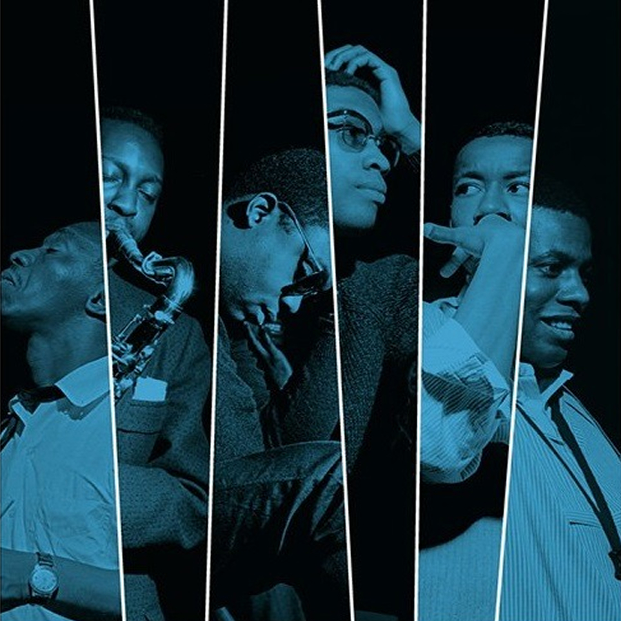
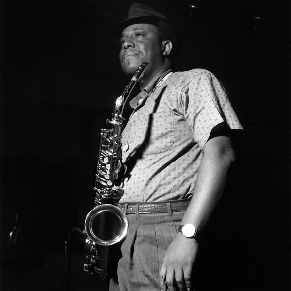
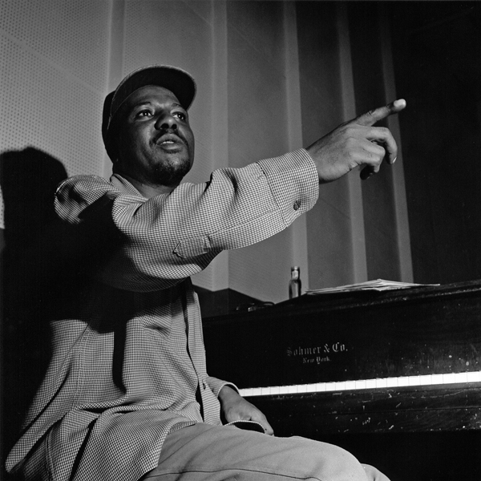
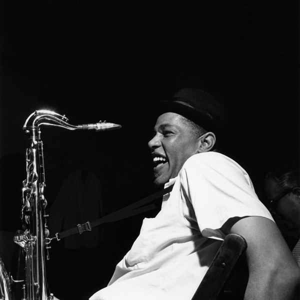
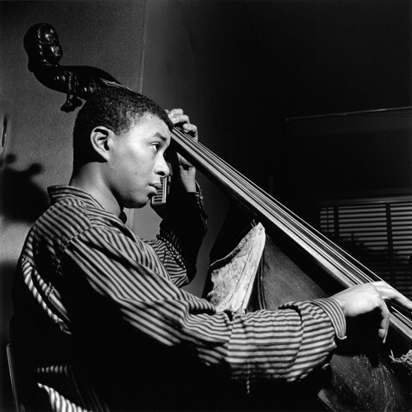
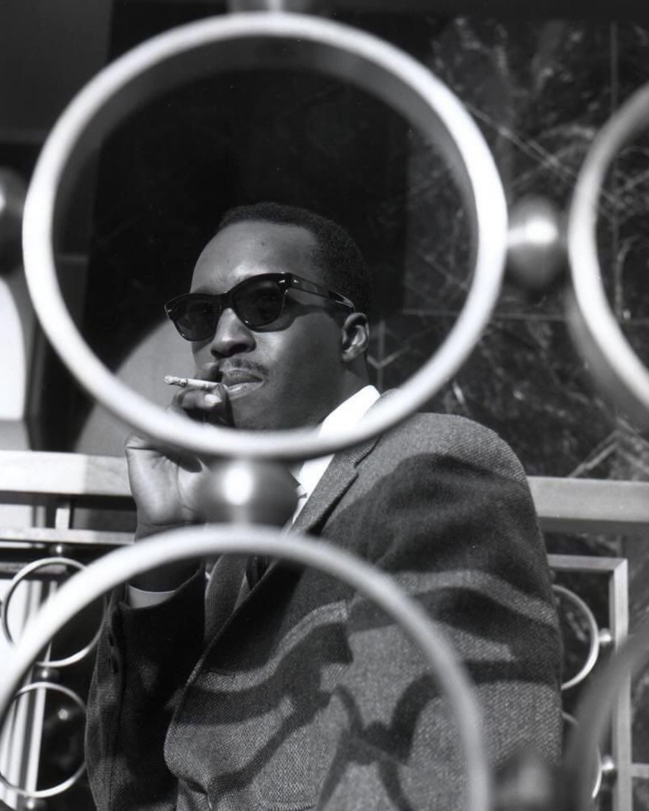
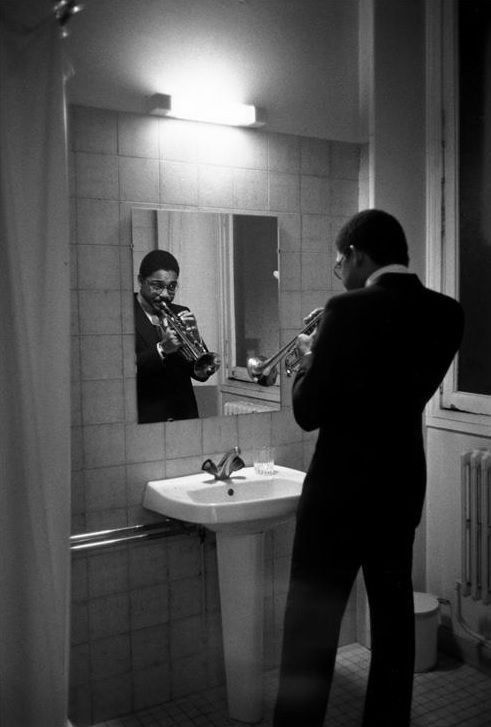
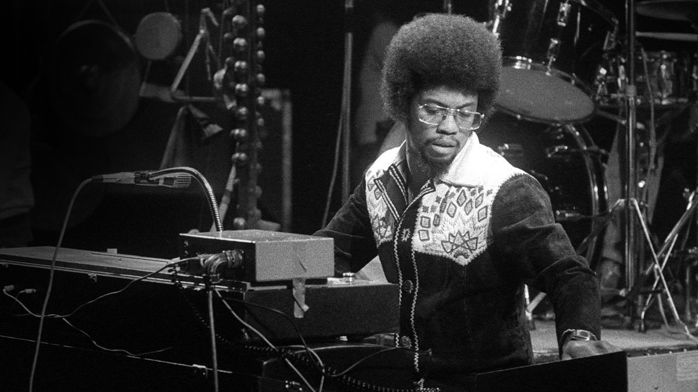
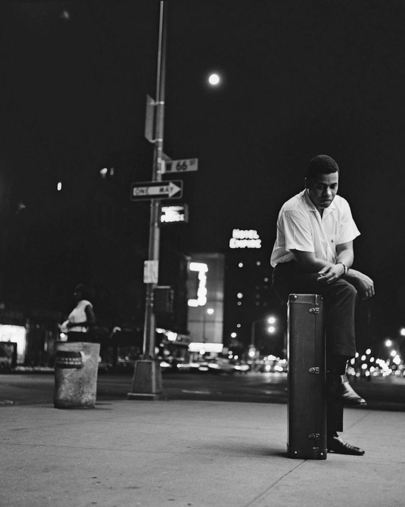

Main content
01 / ABOUT THE LABEL A LEGACY IN EVERY NOTE.
Founded in 1939, Blue Note Records has helped shape the history of jazz for generations. From pioneering recordings to contemporary releases, the label continues to champion artists who challenge conventions and create their own sound.
More than a catalogue of recordings, Blue Note represents a distinct visual and musical identity. Expressive photography, bold typography, and a commitment to artistic freedom remain at the heart of the label today.
Founded in 1939, Blue Note Records shaped generations of jazz through groundbreaking recordings and a distinctive visual identity.
The label's story is one of experimentation, artistic freedom and timeless sound. Its photographs and album covers remain as influential as the music itself.


02 / ARTISTS THE SOUND OF BLUE NOTE.
From jazz pioneers to contemporary innovators, discover the artists who define the sound of Blue Note.
-
 MILES DAVIS TRUMPETER
MILES DAVIS TRUMPETER -
HERBIE HANCOCK PIANIST
-
NORAH JONES VOCALIST
-
 ART BLAKEY DRUMMER
ART BLAKEY DRUMMER -
 GRANT GREEN GUITARIST
GRANT GREEN GUITARIST -
 WAYNE SHORTER SAXOPHONIST
WAYNE SHORTER SAXOPHONIST -
 RON CARTER BASSIST
RON CARTER BASSIST -
HORACE SILVER PIANIST
-
BUD POWELL PIANIST
-

LOU DONALDSON SAXOPHONIST
-

THELONIOUS MONK PIANIST -
 LEE MORGAN TRUMPETER
LEE MORGAN TRUMPETER -

DEXTER GORDON SAXOPHONIST -
ROBERT GLASPER PIANIST
-
JOE HENDERSON SAXOPHONIST
-
 GREGORY PORTER VOCALIST
GREGORY PORTER VOCALIST -
 FREDDIE HUBBARD TRUMPETER
FREDDIE HUBBARD TRUMPETER -
 TONY WILLIAMS DRUMMER
TONY WILLIAMS DRUMMER -

PAUL CHAMBERS BASSIST -
 KENNY BURRELL GUITARIST
KENNY BURRELL GUITARIST
03 / ALBUMS · BLUE NOTE RECORDS THE SOUND ON RECORD.
Some records changed the direction of jazz. Others introduced new voices to the world. Together, their music and iconic cover art tell the evolving story of Blue Note, from its celebrated classics to the present day.


ART BLAKEY & THE JAZZ MESSENGERS
04 / PLAYLISTS LISTEN TO THE LEGACY.
From timeless jazz classics and hidden gems to fresh selections for every mood, our playlists bring together the many sounds of Blue Note. Explore music across generations, discover unexpected favourites, and find the perfect soundtrack for wherever the day takes you. From timeless jazz classics to fresh discoveries, find the perfect soundtrack for your day.
 BLUE NOTE: CLASSIC HITS
BLUE NOTE: CLASSIC HITS
Explore the timeless recordings and legendary performances that shaped the unmistakable Blue Note sound. A perfect introduction to the classics that defined generations of jazz.
 HARD BOP
HARD BOP
 JAZZ VOCALS
JAZZ VOCALS
 MOST SAMPLED
MOST SAMPLED
CURATED PLAYLISTS / BLUE NOTE SOUND
05 / VIDEOS LIVE IN THE MOMENT.
Experience the energy of live performances, the creative atmosphere of recording sessions, and the moments that bring musicians together. From the stage to the studio, explore the performances and stories that reveal another side of Blue Note and the artists who shape its sound.
Experience the music through live performances, intimate interviews and moments inside the recording studio.
06 / GALLERY BLUE NOTE, IN FOCUS.
Every great recording leaves more than a sound. It leaves faces, places, and moments worth remembering. Explore the portraits, studio sessions, and candid photographs that reveal the visual history of Blue Note, capturing the personalities and creative spirit that have shaped jazz across generations. Every great recording leaves more than a sound. Explore portraits, studio sessions and the visual history of Blue Note.
-
01 / LIVE MOMENT
The energy of a performance, captured in a smile.
-
 02 / AT THE PIANO
02 / AT THE PIANOA quiet moment of concentration at the piano.
-
03 / BEHIND THE MUSIC
Sharing music and shaping new ideas.
-

-

-
-
-

-

-
-

-